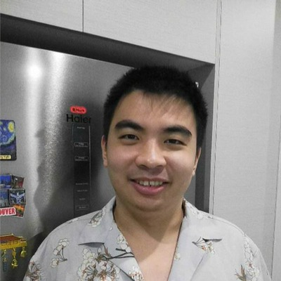

Call For Submissions
AJCAI 2026 PhD Forum
| Date and time | Saturday 28 November 2026, 3:00–6:00 pm (Auckland, New Zealand time), following the keynote |
| Venue | Sir Owen G Glenn Building, University of Auckland, 12 Grafton Road, Auckland 1010, New Zealand. Room to be confirmed. This is an in-person event. |
| Research pitch deadline | 30 October 2026 |
| Notification of acceptance | 6 November 2026 |
We warmly invite current Honours, Master's and PhD students working in Artificial Intelligence to participate in the PhD Forum at the Australasian Joint Conference on Artificial Intelligence 2026 (AJCAI 2026). The forum welcomes research across the areas covered by the main conference's Call for Papers.
The forum brings students together with researchers, practitioners and peers to discuss ongoing and planned research, exchange ideas, and receive advice on research and career development. Through short research pitches, invited talks and open discussion, participants can share early findings or exploratory ideas, receive constructive feedback and connect with potential collaborators.
What To Expect
- Invited talks: Hear perspectives from academia and industry on research, careers and industry experience.
- Student research pitches: Present your research in a 3–5 minute pitch, with an emphasis on ongoing work, emerging directions or ideas, even brave ideas that you would like to discuss.
- Panel discussion: Ask questions and engage in an open dialogue with invited experts about research challenges, PhD life and career development.
- Feedback and networking: Continue the conversations after the pitches, seek advice and connect with fellow students, researchers and practitioners.
- Presentation award: Selected presenters will be eligible for the Best PhD Forum Presentation Award, recognising an outstanding student research pitch.
Invited Speakers

Professor
Michael Witbrock
University of Auckland, New Zealand
A/Professor
Xin Yu
University of Adelaide, Australia

Doctor
Wenhao Wang
TikTok
Tentative Schedule
Saturday 28 November 2026. All times are in Auckland, New Zealand time.
| Time | Session | Speaker |
|---|---|---|
| 3:00–3:05 pm | Welcome and introduction | PhD Forum chairs |
| 3:05–3:30 pm | Invited Talk 1: TBD | Prof. Michael Witbrock |
| 3:30–3:55 pm | Invited Talk 2: TBD | A/Prof. Xin Yu |
| 3:55–4:20 pm | Invited Talk 3: TBD | Dr. Wenhao Wang |
| 4:20–4:30 pm | Short break | — |
| 4:30–5:15 pm | Student research pitchesApproximately 10–15 students; 3–5 minutes per pitch. Voting for the Best PhD Forum Presentation Award takes place during this session. | Student presenters |
| 5:15–5:35 pm | Panel discussionQuestions and discussion with the invited speakers | Invited speakers and forum chairs |
| 5:35–5:40 pm | Award presentationAnnouncement of the Best PhD Forum Presentation Award | PhD Forum chairs |
| 5:40–6:00 pm | Networking and informal discussionFollow-up conversations with speakers, researchers and fellow students | All participants |
| Total | 3 hours | |
Eligibility
The forum is open to current Honours, Master's and PhD students working in any area of AI and at any stage of their studies.
Participation requires two separate registrations:
- Register for AJCAI 2026. Full and student conference registration include the forum. A single-day PhD Forum registration is also available for Saturday 28 November. See the AJCAI 2026 registration page.
- Register with the PhD Forum organisers. Complete the AJCAI 2026 PhD Forum registration and research pitch form.
Important Dates
- Research pitch submission deadline: 30 October 2026
- Notification of acceptance: 6 November 2026
- PhD Forum: Saturday 28 November 2026, 3:00–6:00 pm
All dates and times are stated in Auckland, New Zealand time.
Submission Guidelines
Students interested in presenting should prepare a research pitch that introduces a question, an idea or the broader direction of their research. We particularly encourage:
- Published research from top-tier conferences or journals, with an emphasis on its broader impact and future directions;
- Unpublished, ongoing research and brave ideas;
- Early-stage ideas and emerging research directions;
- Research that extends beyond a single paper; and
- Bold or exploratory ideas for discussion with the community.
Focus on the problem you are exploring, why it matters, its potential impact and where the research may lead next. Students are encouraged to present the broader context of their research, including open questions and insights that can stimulate discussion.
How to register or submit a pitch
Complete the AJCAI 2026 PhD Forum registration and research pitch form. Students proposing a pitch will be asked to provide a working title and a short research summary. No paper or extended abstract is required. Selected presenters will receive the presentation instructions and final time limit.
Presentation Award
A Best PhD Forum Presentation Award will recognise an outstanding student research pitch delivered at the forum. All students selected to give a research pitch will be eligible. Voting takes place during the research pitch session, and the award is presented after the panel discussion.
PhD Forum Chairs
Doctor
Xinyu Zhang
University of Auckland, New Zealand

Doctor
Dylan Campbell
Australian National University, Australia
Doctor
Yiliao Song
University of Adelaide, Australia
Doctor
Dong Gong
University of New South Wales, Australia
For further information, please contact the AJCAI 2026 PhD Forum Chairs. Chair profiles are available on the conference committee page.